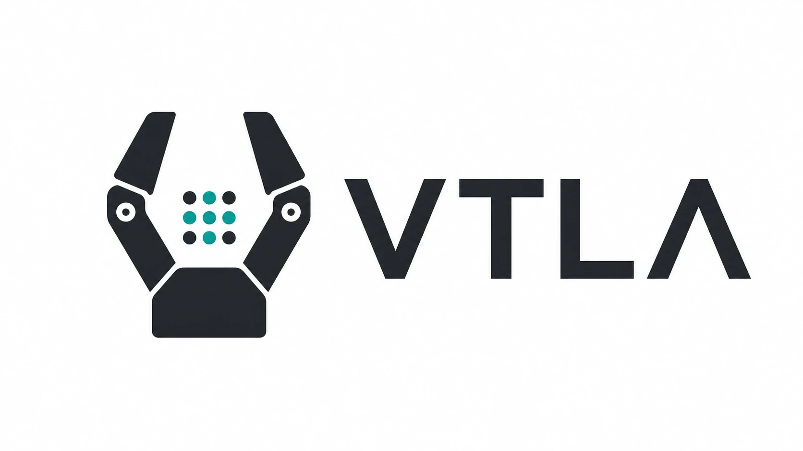
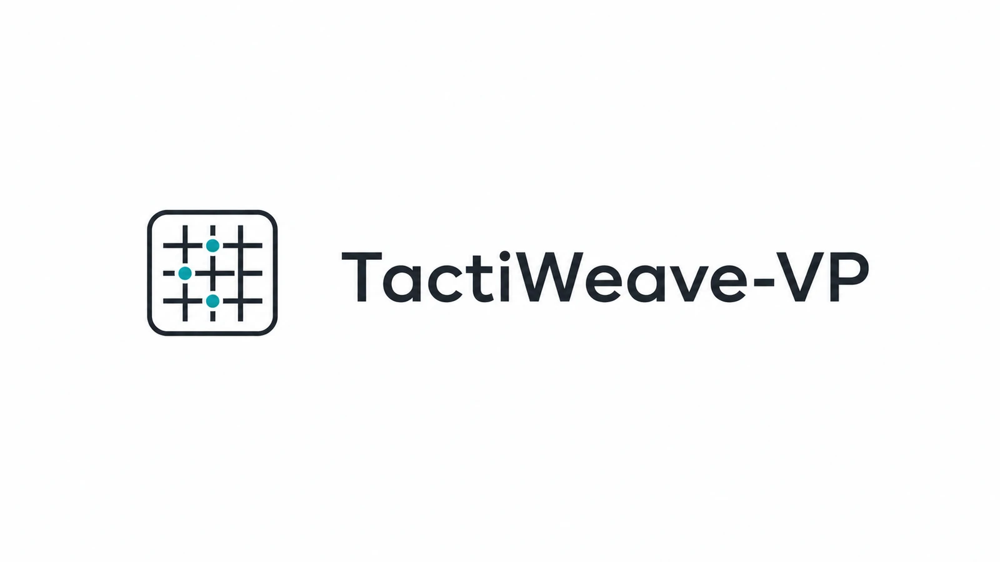
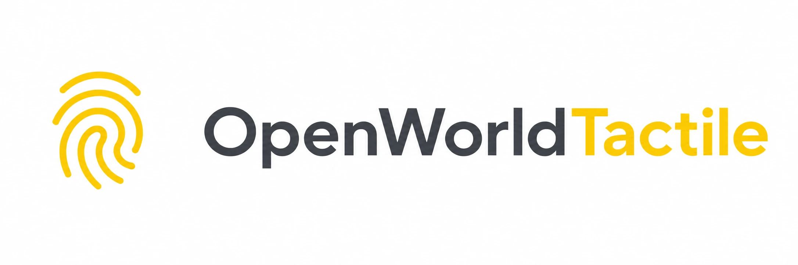
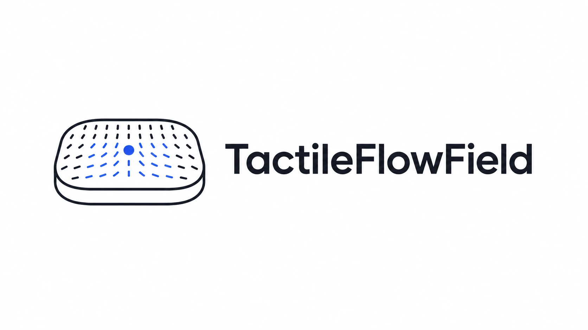
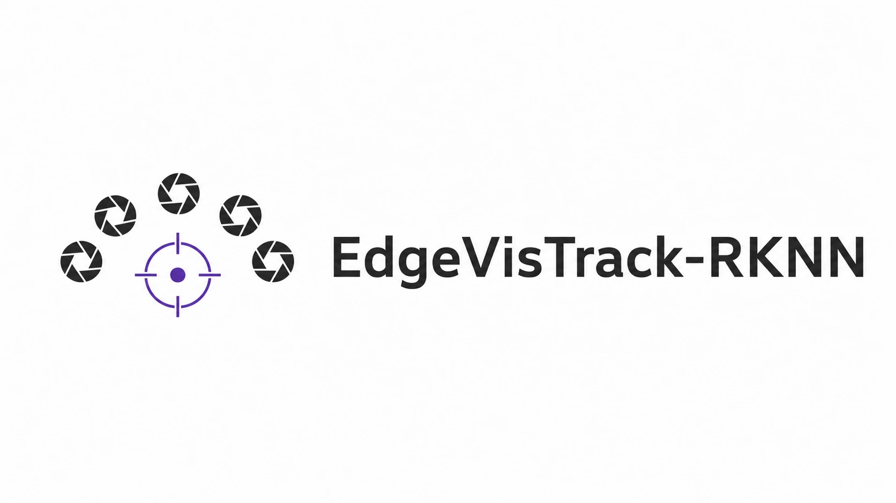
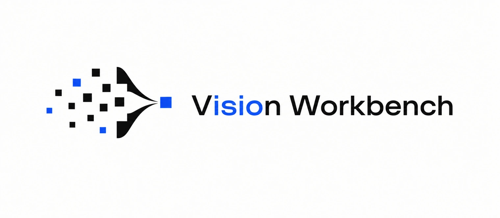
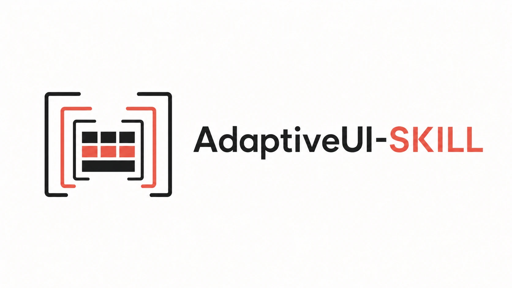
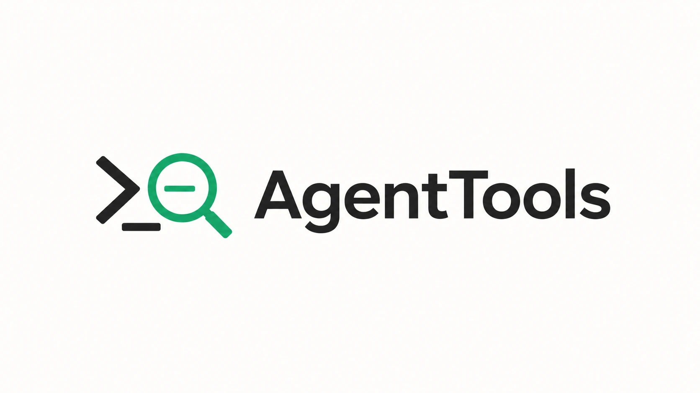

TY-YOLO: An Attention-Based Multi-Scale Complex Scene Fire Smoke Detection Algorithm
审稿中 · Pattern Recognition Letters
Shuqi Ke 「柯书奇」
新闻
发表TY-YOLO: An Attention-Based Multi-Scale Complex Scene Fire Smoke Detection Algorithm审稿中 · Pattern Recognition Letters FgFEU-Net: A Fine-Grained Feature Extraction U-Net Model for Breast Tumor Segmentation Based on Transfer LearningEDGE 2025 · Springer LNCS 16154 (2026) The Real-Time Intelligent Transportation Detection System Based on Edge-Cloud Collaborative ComputingEDGE 2025 · Springer LNCS 16154 (2026) 项目 VTLALeRobot · PI0.5 · Piper 基于 LeRobot 0.5.2 的实体机器人视触觉学习扩展栈，集成 Piper 主从臂、LTeach 触觉传感及数据采集、训练与评估流程，支持 ACT、PI0/PI0.5 与 DreamTacVLA。 私有  TactiWeave-VPPyTorch · ResNet-18 · 因果 TCN 面向短时触觉交互的织物分类原型，融合触觉压力图像序列与六维物理状态， 并通过 ResNet-18、因果 TCN 和注意力池化完成时序分类。 私有  IsaacSim-Tactile4OpenWorldIsaac Lab · UIPC · 力场 基于 Isaac Sim / Isaac Lab 的触觉接触研究平台，使用 UIPC/libuipc 建模柔性膜形变与 局部 Fx/Fy/Fz 力场，支持 Piper 和 Franka 操作实验。 OpenFireAlertYOLO11 · TensorRT · Jetson 面向野火与火烟监测的边缘智能平台，整合 Jetson 上的 YOLO11/TensorRT 视觉推理、 ESP32-S3 传感节点与 Spring Boot/MySQL 控制平面，并支持设备级告警联动。  TactileFlowFieldPyTorch · RKNN · RV1126B 面向视觉触觉传感器的稠密光流学习与边缘部署工程，支持 PyTorch 流式推理、 ONNX/RKNN 转换、基于 QAT 的 INT8 量化与 RV1126B 多路推理。 私有  EdgeVisTrack-RKNNRKNN · Cython · RV1126B 面向 RV1126B 的纯视觉多相机稀疏标记点跟踪工程，采用局部 ROI 模板相关与亚像素定位， 提供 CPU、Fixed RKNN 和 Dynamic RKNN 后端。 私有   AdaptiveUI-SKILLPython · 静态分析 · Agent技能 响应式UI审计与修复 Agent 技能，基于零依赖分析器， 包含24条规则、JSON Schema输出、CI阈值及79项自动化测试。  AgentToolsPowerShell · 诊断 · Codex 一个只读的 Codex 诊断工具包，用于 PowerShell 配置、Conda 钩子、 Python 编码、Git 行尾、代理/TUN 状态、重连日志及运行时技能清单。 |